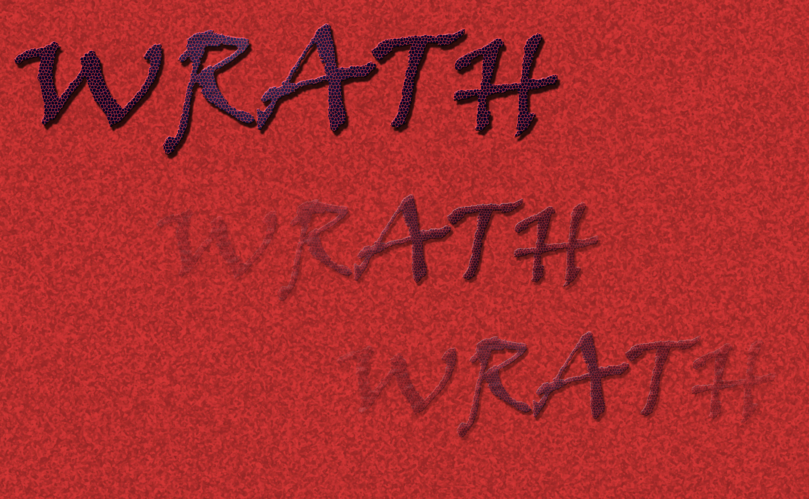

{% extends 'wswrath/base.html' %}
{% load newfilters %}
{% block title%}Compare URL{% endblock%}
{% block body_block %}

  <div class="container">
    <div class="row text-center">
        <br><br>
    </div>
    <p><mark>{{ url1 }}</mark> and <mark>{{ url2 }}</mark> are <mark>{{ percent }}%</mark> similar.</p><br>
  </div>

{% endblock %}